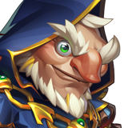
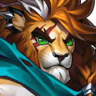
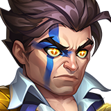
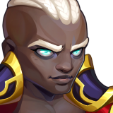
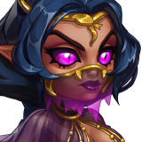

Wodryn is more than a Tank who stands at the front and absorbs damage. He combines cleansing, Critical Hit Chance support, Oak Bark protection, additional Energy generation and damage reduction.
His abilities create an unusual relationship between offense and defense: Critical Hit Chance can help allies deal more damage while also influencing their probability of reducing incoming damage.
This guide covers Wodryn's core mechanics, recommended build priorities and five promising hero partnerships.
01 · Skills & Core Mechanics
Wodryn's identity revolves around frontline protection, Critical Hit Chance support and additional Energy generation.
Deepwood Might
Increases Critical Hit Chance for allies positioned behind Wodryn.
This can improve offensive consistency while also interacting with the team's defensive mechanics.
Unbowed Oak
Uses each hero's Critical Hit Chance to determine the probability of reducing incoming damage.
Critical Hit Chance therefore has both offensive and defensive value in Wodryn's teams.
Bark Renewal
Provides cleansing against Debuffs and Control Effects.
This is a cleansing mechanic, not permanent immunity to effects that can be reapplied.
Oak Bark & Energy
Wodryn gains additional Energy when taking damage while Oak Bark is active.
This creates potential interactions with heroes who benefit from allied Energy generation.
02 · Skin Priorities
Our recommended priority is to develop Wodryn as a reliable frontline Tank before investing in additional offensive potential.
Strength is Wodryn's main attribute. It improves Health and Physical Attack. Because several abilities scale with Physical Attack, this is a particularly valuable investment.
Wodryn needs to survive long enough to cleanse allies, activate defensive mechanics, generate Oak Bark and provide Critical Hit Chance support.
His Ultimate deals Physical Damage, so Armor Penetration can help overcome enemy Armor. However, frontline durability takes priority over turning him into a damage dealer.
03 · Glyph Priorities
Our recommended Glyph order focuses on durability and the attributes that directly support Wodryn's abilities.
Supports his main attribute, survivability and overall development.
Essential for keeping Wodryn active as a frontline Tank.
Contributes to Wodryn's damage, healing and the Critical Hit Chance bonuses provided by Deepwood Might.
Supports offensive potential and interacts with the defensive probability of Unbowed Oak.
Adds protection against magical threats, although our current priority favors attributes more directly connected to his core kit.
04 · Artifact Priorities
Our first priority. Strength provides a solid development foundation and improves Physical Attack, supporting several Wodryn abilities.
Increases Critical Hit Chance and Magic Defense. Critical Hit Chance interacts with Unbowed Oak's damage reduction probability, while Magic Defense improves survivability.
Provides Magic Defense to the entire team for nine seconds when activated. Valuable against magical threats, although our general build recommendation places it third.
05 · Gift of Elements — Sparks of Power
Our recommendation is to maximize Wodryn's Sparks of Power as your resources allow.
He benefits from overall stat development, especially because he needs sufficient durability to remain active and continue providing protection, cleansing and support.
06 · Talisman of Two Forms
Strength + Toughness
Wodryn's Talisman of Two Forms provides Strength as its main attribute and Toughness as its secondary stat.
Strength supports his overall development, while Toughness improves resistance to incoming damage when his Health falls below 50%.
This is a useful defensive combination for a Tank exposed to constant frontline pressure.
07 · Five Powerful Hero Synergies
Wodryn opens several team-building possibilities. These five partnerships highlight different ways to benefit from his Critical Hit Chance, defensive support and Energy mechanics.

01 · Guus — Critical Hit Support
Guus is a natural partner for Wodryn's Critical Hit mechanics. Through Golden Feathers, Guus can increase Critical Hit Chance, strengthen Critical Hit Damage and help allies recover Health.
Together, they can create stronger offensive pressure while improving the conditions for Unbowed Oak's damage reduction.
Positioning matters: Guus provides Golden Feathers to allies in front of him, while Wodryn supports allies positioned behind him.

02 · Leonel — Energy Disruption
Leonel's Mark of Fate allows his Critical Hits to apply marks that drain enemy Energy. These marks can stack.
By increasing Leonel's Critical Hit Chance, Wodryn can create more opportunities to apply these marks and disrupt enemy Energy generation.
Leonel also contributes through Royal Roar, increasing Critical Hit Chance for himself and the ally with the highest Physical Attack.
Adding Guus introduces additional Critical Damage support.

03 · Crow — Silence & Magic Protection
Crow brings Silence against Intelligence-based enemies through Silent Judgment.
Meanwhile, Wodryn provides teamwide Magic Defense through Rootbreaker and cleansing through Bark Renewal.
This creates a combination of offensive disruption and defensive support against certain magical compositions.

04 · Tristan — Energy & Physical Attack
Tristan's Blessed Vanguard allows him to benefit from Energy gained by the ally directly in front of him, subject to the skill's conditions.
Wodryn gains additional Energy when taking damage while Oak Bark is active. Positioning Wodryn directly in front of Tristan therefore creates a potential Energy interaction.
Tristan's Righteous Zeal also increases Physical Attack for himself and allies positioned in front of him.
This can strengthen Wodryn's damage, healing and Critical Hit Chance support.

05 · Yasmine — Critical Assassination
Yasmine specializes in Critical Hits and aggressive attacks against vulnerable enemies.
Her Dance of Death targets the enemy with the lowest Armor, while Assassin's Instinct increases her Critical Hit Chance and Dodge.
Wodryn's Deepwood Might can improve her offensive consistency. Meanwhile, Unbowed Oak can benefit from Yasmine's own Critical Hit Chance.
Adding Guus creates another potential layer of Critical Hit Chance, Critical Damage and healing support.
08 · Counters & Limitations
Wodryn has promising defensive mechanics, but his effectiveness depends on the specific opponents and how their abilities interact with his own.
Repeated Debuffs
Bark Renewal can remove negative effects, but enemies that continuously reapply them may affect the team again.
Control Effects
His cleansing abilities should be evaluated against different forms of Control through actual battle testing.
Positioning Dependencies
Several of Wodryn's most interesting synergies depend on whether allies are positioned in front of or behind him.
Unconfirmed META Status
His long-term competitive value will depend on how consistently his mechanics perform against real opponents.
09 · Final Verdict
Wodryn is a Nature Tank with an unusual combination of protection, offensive support and Energy generation.
Our current recommendation is to prioritize Strength and Health, followed by the Physical Attack and Critical Hit Chance attributes that support his core mechanics.
Guus strengthens Critical Hit support and survivability. Leonel adds Energy disruption. Crow contributes Silence. Tristan creates Energy and Physical Attack interactions. Yasmine offers aggressive assassination potential.
However, Wodryn is still a developing hero. Future Relics and additional battle testing may change how we evaluate his builds and competitive value.
Build with intention. Master the mechanics. Control the fight.
10 · Watch the Full Wodryn Guide
Watch the complete Gods of Alliance video covering Wodryn's build priorities and five hero synergies.